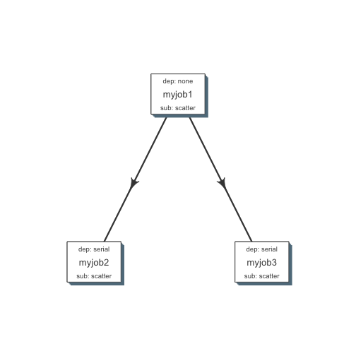
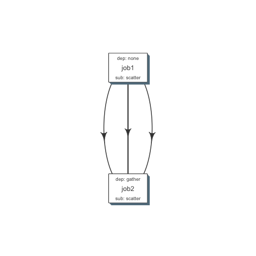
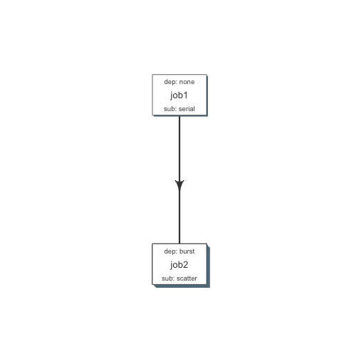

Currently we support LSF and Torque (SGE).
qobj <- queue(type = "lsf", queue = "normal", verbose = FALSE)
Simple flow¶
- Each module here has a single job
- job2 and job3 would start after 1 is complete
job1 <- job(name = "myjob1", cmds = "sleep1", q_obj = qobj)
job2 <- job(name = "myjob2", cmds = "sleep2", q_obj = qobj, previous_job = "myjob1", dependency_type = "serial")
job3 <- job(name = "myjob3", cmds = "sleep3", q_obj = qobj, previous_job = "myjob1", dependency_type = "serial")
fobj <- flow(name = "myflow", jobs = list(job1, job2, job3), desc="description")
plot_flow(fobj)

plot of chunk plot_simpleflow
dat <- flowr:::.create_jobs_mat(fobj)
knitr:::kable(dat)
| jobnames | prev_jobs | dep_type | sub_type | cpu | nodes | jobid | prev_jobid | |
|---|---|---|---|---|---|---|---|---|
| myjob1 | myjob1 | none | scatter | 1 | 1 | 1 | NA | |
| myjob2 | myjob2 | myjob1 | serial | scatter | 1 | 1 | 2 | 1 |
| myjob3 | myjob3 | myjob1 | serial | scatter | 1 | 1 | 3 | 1 |
Submission types¶
- scatter: submit all commands as parallel independent jobs
- serial: run these commands sequentuially one after the other
Dependency types¶
- none: independent job
- serial: one to one relationship with previous job
- gather: many to one wait for all commands in previous job to finish then start current
Serial: one to one relationship¶
- All commads in ‘job1’ are submitted, and those is ‘jobs2’ wait for those in ‘job1’ to complete.
- Commands in ‘job2’ are serially dependent on ‘job1’
- Both jobs are submitted as parallel (scatter), i.e. there is not intra dependency.
- so previous job submission:
scatter, and current job’s dependency typeserial
cmds = rep("sleep 5", 10)
jobj1 <- job(q_obj=qobj, cmd = cmds, submission_type = "scatter", name = "job1")
jobj2 <- job(q_obj=qobj, name = "job2", cmd = cmds, submission_type = "scatter",
dependency_type = "serial", previous_job = "job1")
fobj <- flow(jobs = list(jobj1, jobj2))
plot_flow(fobj)

plot of chunk unnamed-chunk-3
Gather: many to one relationship¶
- makes sense when previous job had many commands running in parallel and current job would wait for all
- so previous job submission:
scatter, and current job’s dependency typegather
jobj1 <- job(q_obj=qobj, cmd = cmds, submission_type = "scatter", name = "job1")
jobj2 <- job(q_obj=qobj, name = "job2", cmd = cmds, submission_type = "scatter",
dependency_type = "gather", previous_job = "job1")
fobj <- flow(jobs = list(jobj1, jobj2))
plot_flow(fobj)

plot of chunk unnamed-chunk-4
Burst: one to many relationship¶
- makes sense when previous job had one command current job would split and submit several jobs in parallel
- so previous job submission_type:
serial, and current job’s dependency typeburst, with a submission type:scatter
jobj1 <- job(q_obj=qobj, cmd = cmds, submission_type = "serial", name = "job1")
jobj2 <- job(q_obj=qobj, name = "job2", cmd = cmds, submission_type = "scatter",
dependency_type = "burst", previous_job = "job1")
fobj <- flow(jobs = list(jobj1, jobj2))
plot_flow(fobj)

plot of chunk unnamed-chunk-5
For more details look at Building flowr recepies